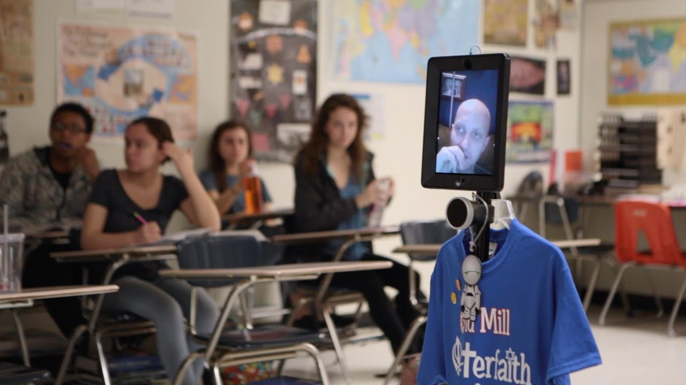

Welcome to my page, here I will inform you on an impact of Collaborative Telepresence on Education.
Telepresence robots are going to be seen a lot more in educational settings, due to their ability to help children “attend” class, even when they cannot physically be there. Even though telecommuting to school isn’t necessarily an ideal way to learn, the students felt more e socially connected with peers, happier, and more academically involved. “When one chronically ill student used a robot to virtually attend class, he suddenly had increased energy and stamina,” writes McSweeney. “Previously, he was lethargic and uninterested in school, and his mother assumed his heart condition would prevent him from spending a full day on schoolwork. However, when he started using the robot, he became eager and able to attend school all day.” These robots may help revolutionize how we think about global online experiences or global learning partnerships. This technology could facilitate foreign-exchange programs without students ever physically going abroad.
